We reizen van Los Angelos naar San Diego. Onderweg zien we hoe veel Amerikanen, naar schatting meer dan 80 miljoen, wonen in veredelde staan caravans. Zij hebben wel een mooie wagen voor hun deur staan....
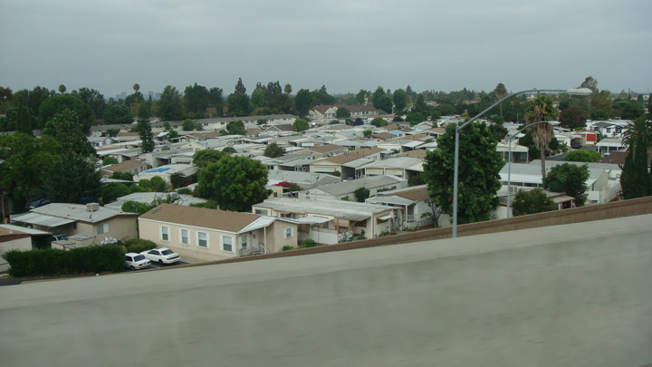
Onze Ruben fotografeert zichzelf. Meestal wil hij niet de foto, nu legde hij zichzelf vast, wat een ijdelheid.
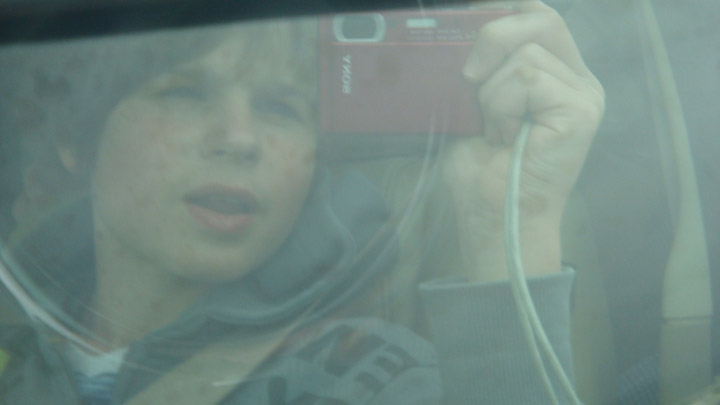
Op een half uur van San Diego even gestopt op een parking om met de verrekijker naar een hoofercraft te kijken die op de zee aan het trainen was. De afstand was wat ver voor foto's te maken maar met onze kleine verrekijk konden we toch iets waarnemen. Simon had ook oog voor de eekhoorns op de grond.
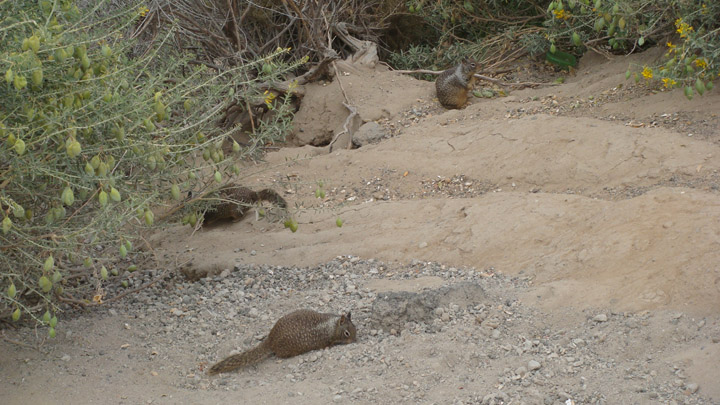
Na 2.5 uur rijden dan toch aangekomen in Sea Word San Diego.
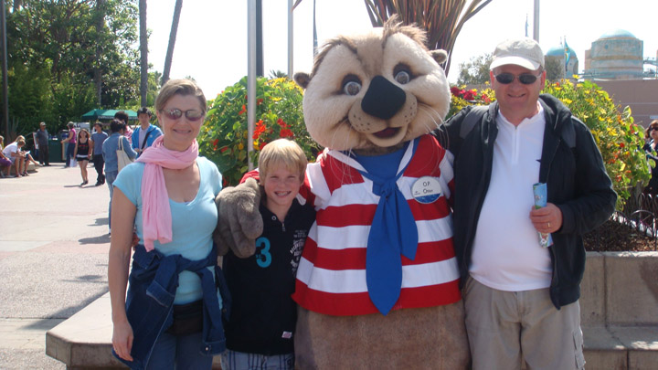
Simon bewondert een orka. Zij noemen deze dieren "SHAMU". Ik schat dat deze wel 6 meter groot is.
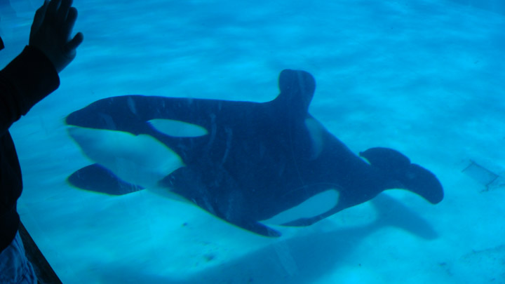
Spijtig dat de reflectie de foto een beetje verbrodt. Met de flash ook even geprobeerd, maar resultaat was nog slechter, toe stond ik er zelf bij op door de reflectie. Ik ben dan ook geen krak in het foto's vastleggen.
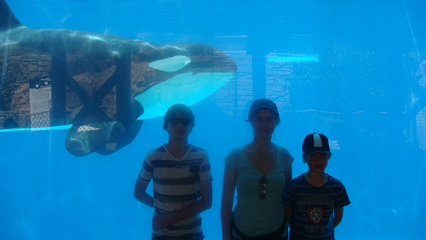
De SHAMU-show was indrukwekkend. Kijk zelf maar veder... Dit was eens iets anders dan de dolfijnen...
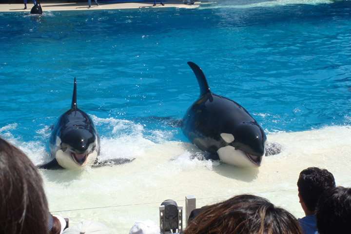
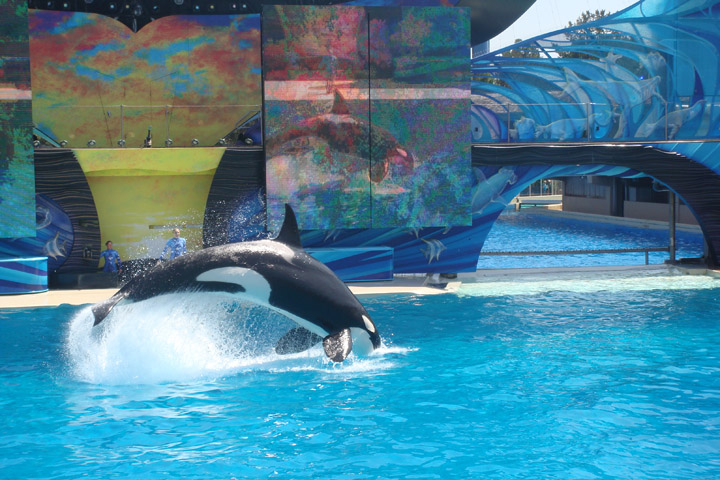
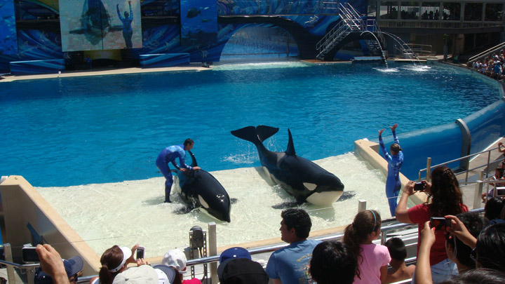
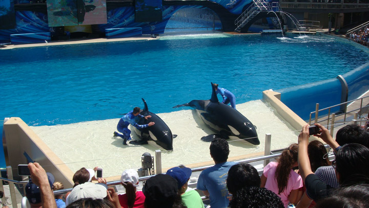
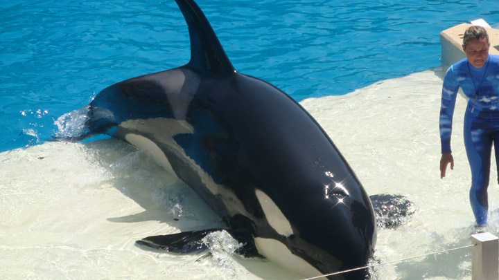
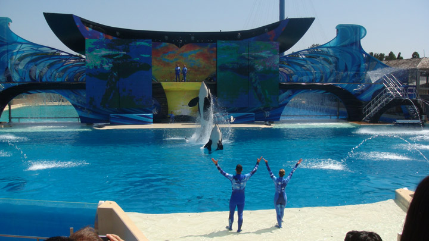

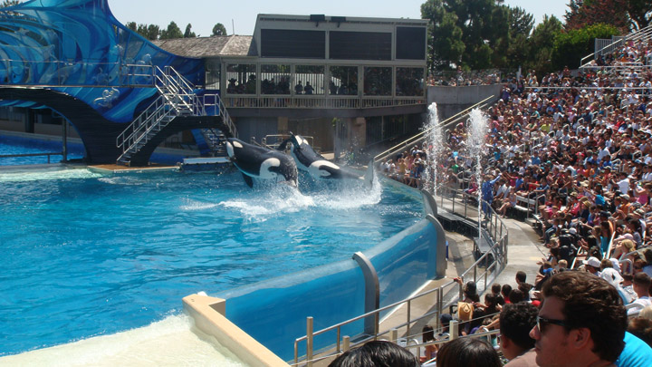
Zee schidpadden hebben iets speciaal........Turtle Reef was dan ook zeer mooi.
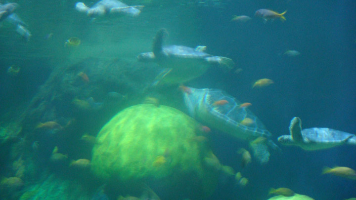
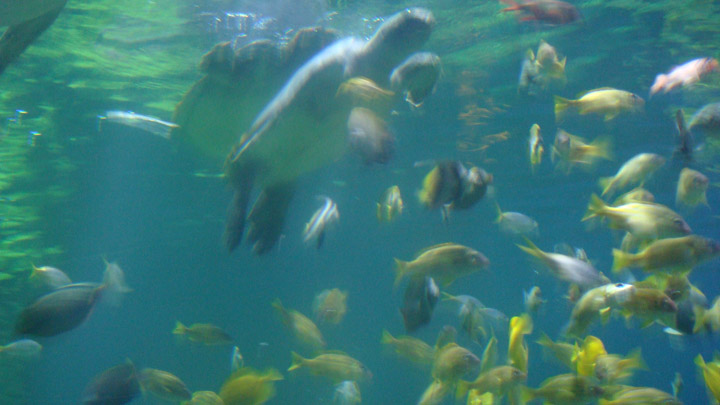
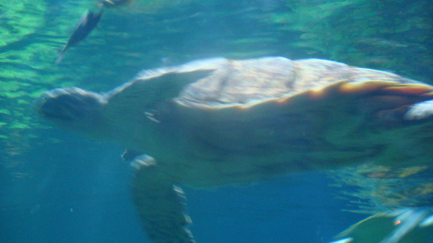
Simon voedert de zeeleeuwen. De zeeleuwen vochten voor elke vis. Dit leverde een hels lawaai. Nadien de hadden wassen met speciale zeep want de vissen en zijn handen stonken wel een beetje..... naar vis.
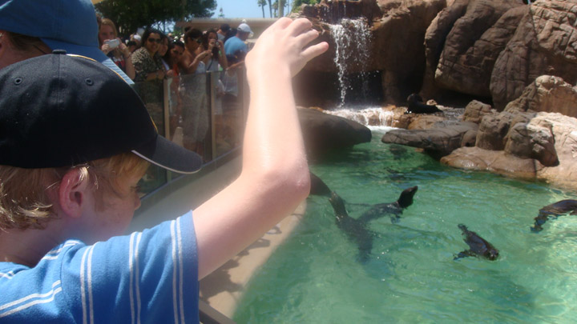
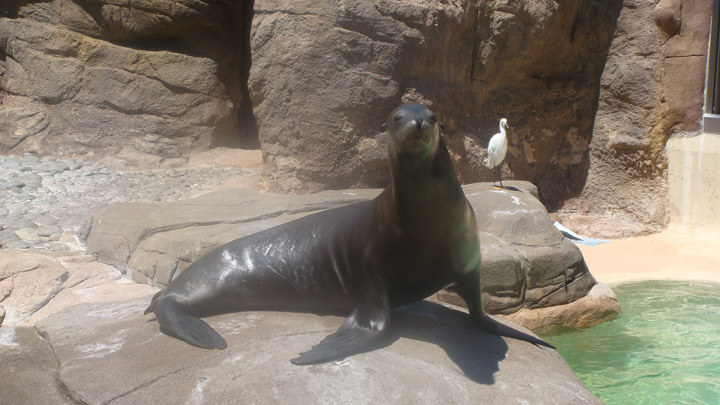
Wij hebben San Diego verlaten en trekken nu richting de canyons waar we de volgende dagen zullen vertoeven. Wij rijden en slapen in Palm Springs. Wij kunnen de snelweg kiezen maar de navigatie stuur ons via een korte route door een rotswoestijn. Hier groeien vele woestijn planten zoals cactussen...
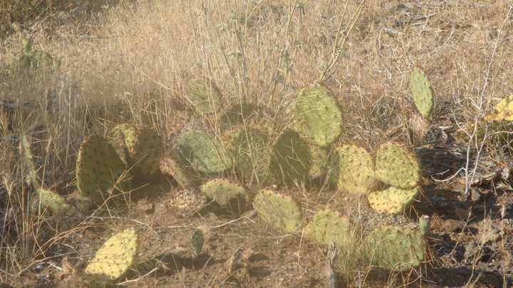
Om 18.00 uur was het hier 40°. Overdag loopt het op tot 48°. Bij aankomst in het hotel toch maar lekker even gaan zwemmen.
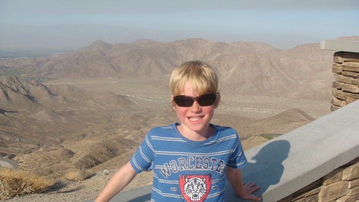
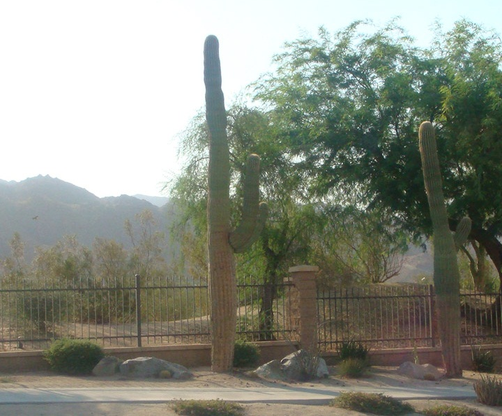
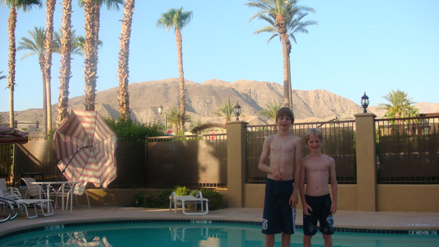